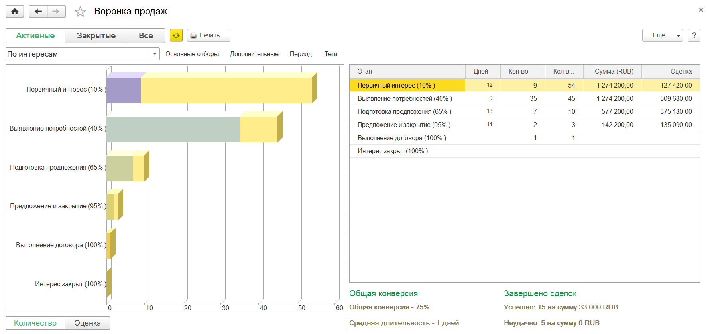
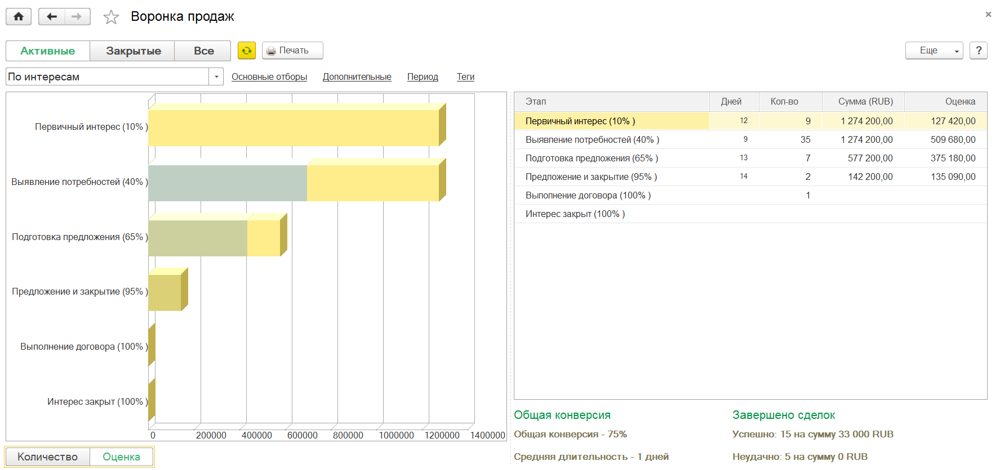
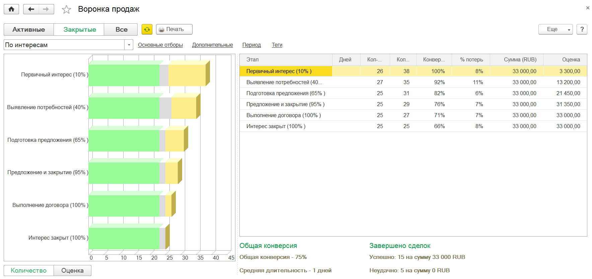
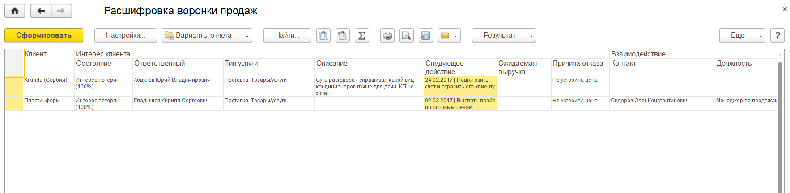
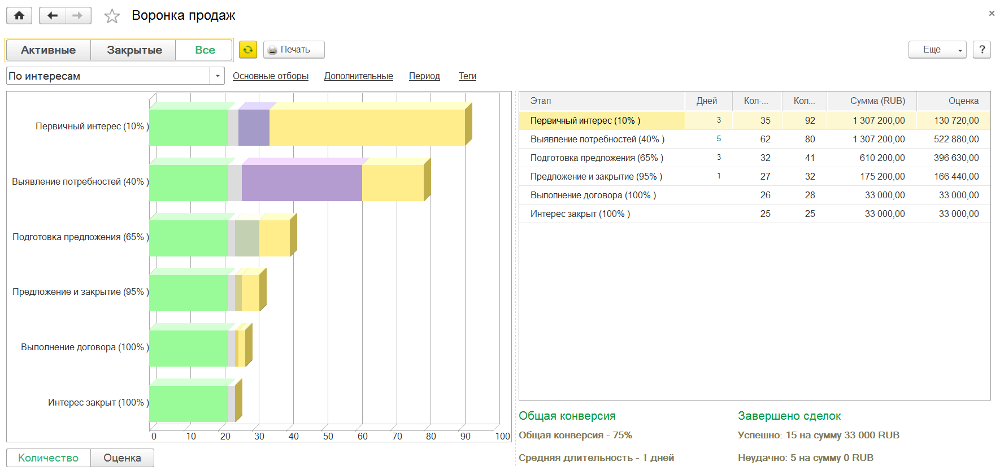
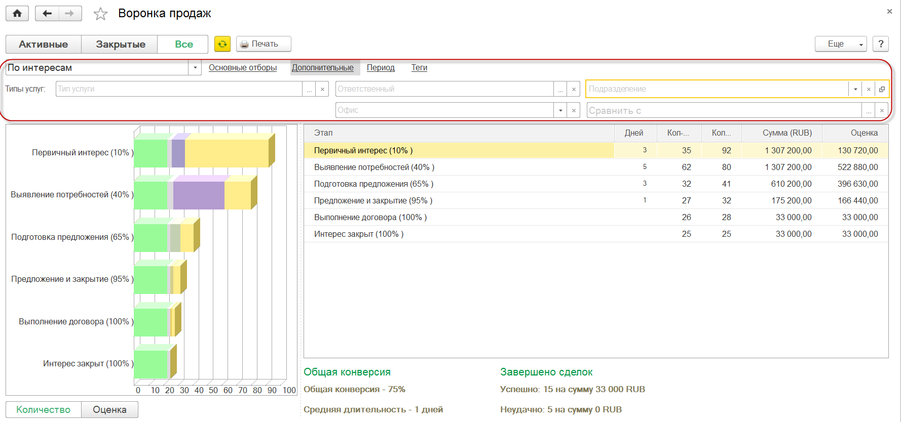
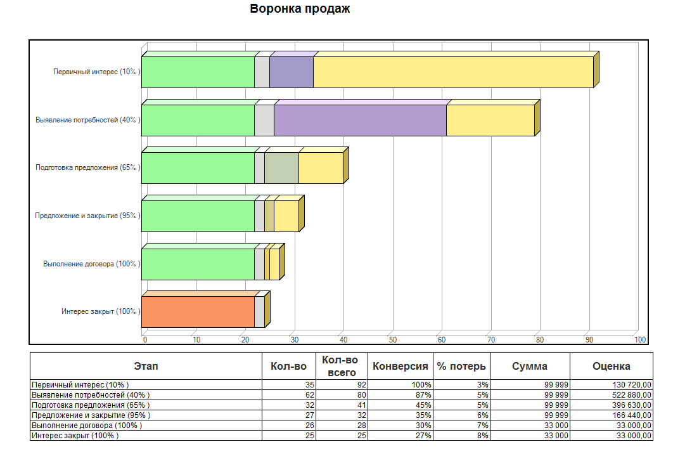
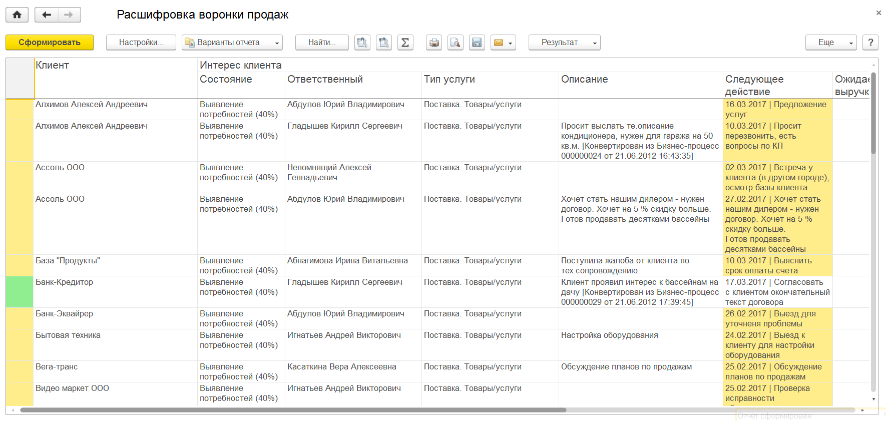

Рассмотрим отчет «Воронка продаж» как один из удобных и актуальных механизмов управления Интересами клиентов.
Воронка продаж является ключевым инструментом анализа продаж компании и позволяет представить картину, отражающую деятельность менеджеров, направленную на реализацию товаров и услуг.
Воронка продаж предназначена для оперативного контроля и управления продажами в организации. Особенность оперативного контроля заключается в том, что информацию об этапах продаж клиентам, менеджер/руководитель получает непосредственно из прохождения конкретного этапа каждой продажи.
Таким образом, обработка Воронка продаж способствует оперативному получению информации о состоянии дел компании по продажам, начиная от проявленного клиентом интереса и заканчивая этапом завершения продажи. По воронке наглядно видно - на какие этапы следует обратить внимание, чтобы довести продажи до их завершения.
Анализировать продажи возможно по двум показателям: Количество и Оценка. Инструмент анализирует этапы продаж за произвольный выбранный период.
Воронка продаж строится в разрезе Состояний интересов клиентов.
В Воронке продаж предусмотрено 3 варианта отображения:
Активные
Закрытые
Все
Рассмотрим каждый из них в отдельности.
Вариант «Активные»
Позволяет получить оперативный на текущий день «слепок» состояния продаж в компании. Помогает ответить на вопросы:
на каких этапах взаимодействия с клиентами есть проблемы внутри нашей компании (Интересы «зависли»),
идет ли достаточный входящий поток обращений от клиентов (правильная ли Воронка),
не имеется ли перегруза/простаивания менеджеров по продажам по закрепленным за ними сделкам (количество одновременно ведущихся сделок),
какой задел по сделкам у нас уже имеется в будущем (временно отложенные или запланированные сделки, которые будут продолжены в будущем).
Также в воронке выводится сводная информация обо всех завершенных продажах (как успешных, так и завершенных отказом).

На скриншоте видим, что по данным базы завершено с успехом 15 сделок на сумму 33 000 р. и 5 сделок отменено (без указания суммы). Увидеть, на каких этапах и какие сделки были отменены, можно в режиме воронки «Закрытые». Для наглядного построения до "правильной" воронки все сделки, которые были пройдены, но находятся в работе на более низких этапах Воронки достраиваются вверх (отдельным цветом). Это позволяет в любой момент времени оценить сколько было пройдено через конкретный этап сделок.
Отклонения от «классического» вида воронки дает повод задуматься о наличии каких то проблем в работе компании в части продаж и помогают принять корректирующие решения.
Например, если мы видим, что большое число сделок находится на этапе «Выявление потребностей» (больше чем на предыдущем) – это повод задуматься об эффективности работы менеджеров на этом этапе.
Помимо анализа продаж по количеству этапов можно построить Воронку по Оценке: оценкой является сумма заявленная в сделке менеджеров умноженная на экспетрную оценку (эспертная оценка задается в карточке состояния документа "Интерес"). Для этого надо изменить показатель на «Оценка».

Справа от диаграммы находится список этапов, представляющий данные воронки в табличном виде. В данной таблице одновременно выводятся данные и по количеству и по ожидаемой выручке.
Вариант «Закрытые»
Позволяет оценить эффективность работы по проведению сделок в компании и используется, как один из основных KPI для оценки работы менеджеров по продажам. В данном режиме на диаграмме отображается разделение на успешно завершенные интересы (сделки) и неудачно завершенные (выводятся серым цветом).
Позволяет:
оценить эффективность работы менеджеров по продажам (один из основных KPI менеджера),
определить этапы в процессе продаж, у которых отвал клиентов наибольший, понять причины этих отвалов и внести корректирующие действия,
оценить объем проведенной работы менеджера по продажам за период.

Те интересы, которые завершены неудачно, отображаются на диаграмме серым цветом.
Кликнув по серой области, можно проанализировать полученную в виде отчета расшифровку и открыть нужные интересы, изучить историю взаимодействий и документы по данным интересам. Например, расшифруем область состояния «Предложение и закрытие»:

Таким образом, можно будет понять – что стало причиной потери на одной из завершающих стадий Интереса клиента.
Вариант «Все»
Является суммой показателей из режимов «Активные» и «Закрытые». Позволяет ответить на вопросы:
Какова динамика прироста Воронки продаж (чего больше - закрытых или активных интересов). В случае увеличения активных интересов относительно предыдущего периода – на лицо перегруз менеджеров. В случае увеличения закрытых интересов относительно предыдущего периода – «простаивание» менеджеров.

Конверсия
Конверсия Воронки продаж является отношением успешно завершенных сделок на общее количество завершенных сделок за период анализа Воронки продаж. Таким образом, конверсия является показателем эффективности проведения сделок менеджерами по продажам. Чем выше конверсия, тем выше эффективность сделок. Конверсия Воронки продаж рассчитывается только по завершенным сделкам:
Конверсия Воронки продаж = Кол-во успешно завершенных сделок / Кол-во завершенных сделок * 100 %
Конверсия этапов Воронки продаж отражает эффективность отработки сделки на конкретном этапе. Наибольшая разница конверсии между соседними этапами показывает наличие проблемы в процессе работы со сделками, которая больше всего влияет на эффективность проведения сделки в целом. Таким образом, на данном этапе следует внимательным образом проанализировать причины отказа клиентов от продолжения сделок и принять управленческие решения.
Дополнительные возможности Воронки продаж
Часто возникает потребность анализа продаж не в целом по компании, а по подразделениям и конкретным менеджерам. Анализ конверсии конкретного менеджера является одним из важных показателей его эффективности. Менеджер имеет возможность анализа "Воронки продаж" только по себе, руководитель подразделения - по своему подразделению и сотрудникам по отдельности. Это достигается за счет отборов, которые доступны справа от выбора варианта отображения "Вороник продаж" (подключен механизм "Доступа к данным других пользователей").
Воронка продаж стороится за кокретно выбранный период: по умолчанию - это текущий месяц. Дополнительно анализировать продажи возможно по другим доступным аналитикам: по источникам привлечения, типам услуг, сегментам клиентов и регионам.

Воронку можно распечатать или сохранить, например в PDF или послать как вложение письма.

Любой этап Воронки продаж можно расшифровать двойным кликом мышки. В представленном отчете выводится информация о состоянии интересов, а так же с помощью цветовой индикации (зеленый, желтый, красный) – о заполненности и актуальности данных.
